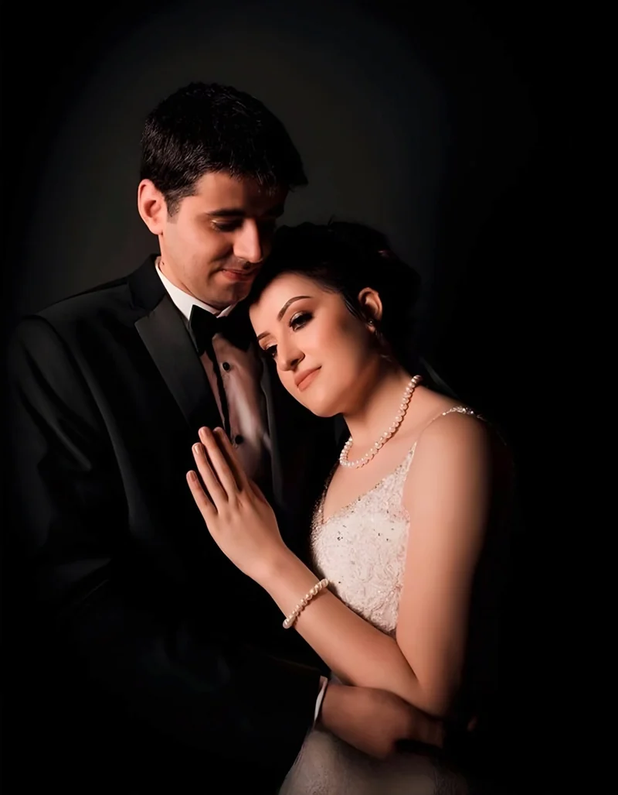
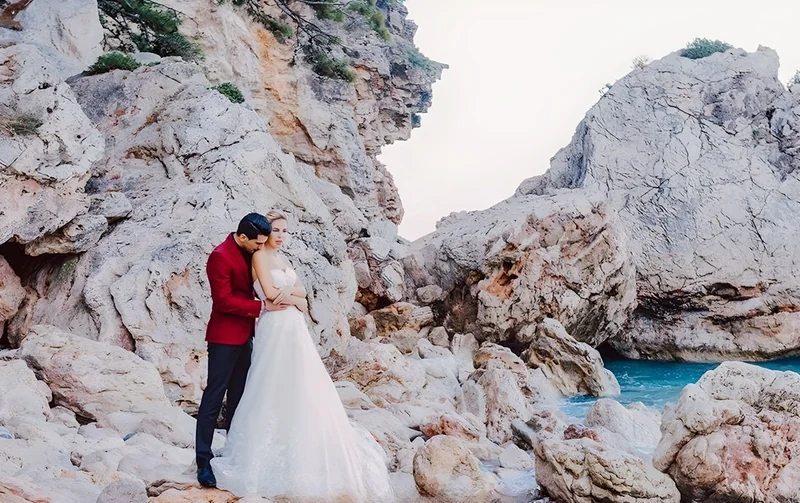
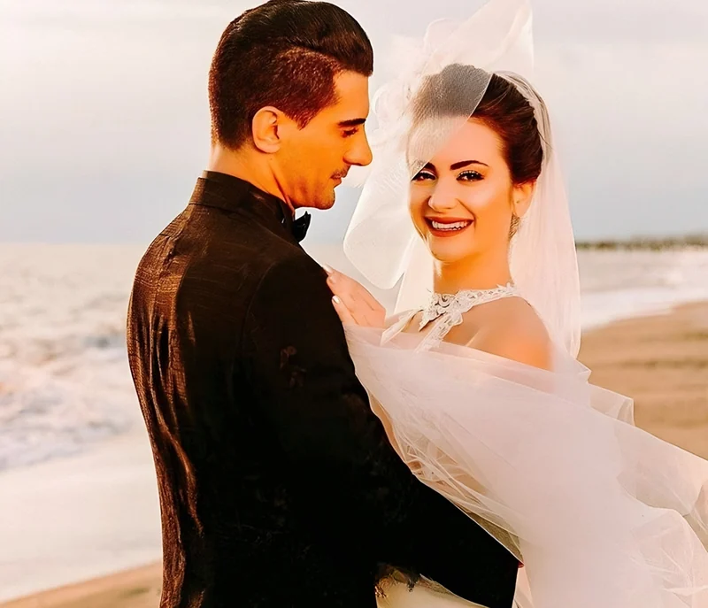
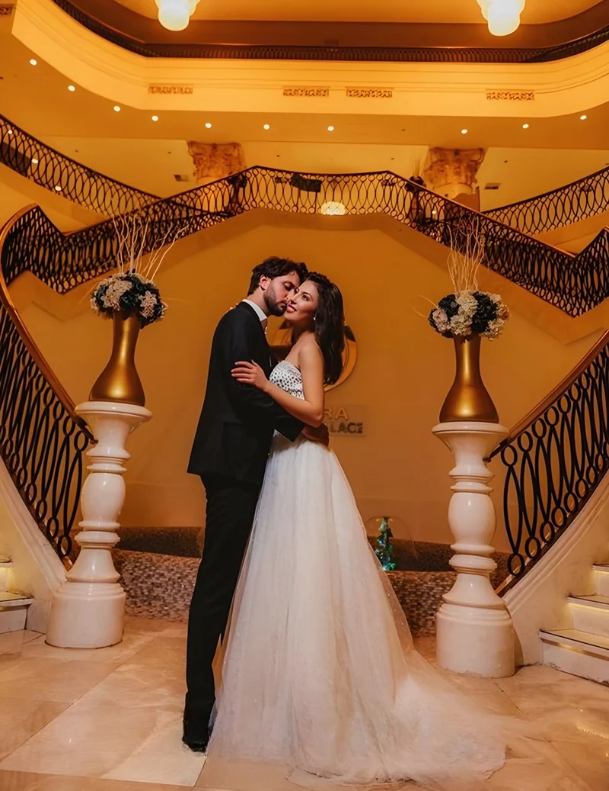
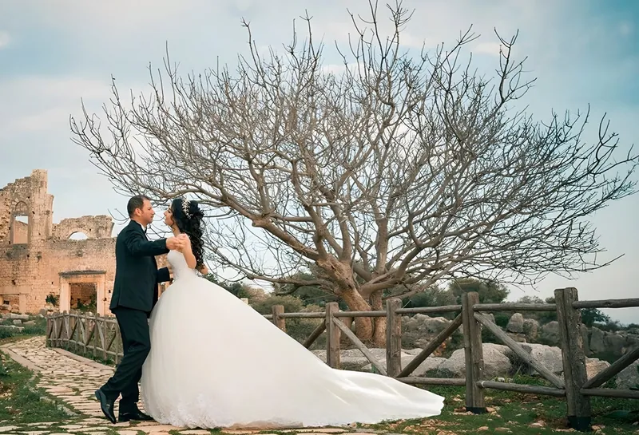
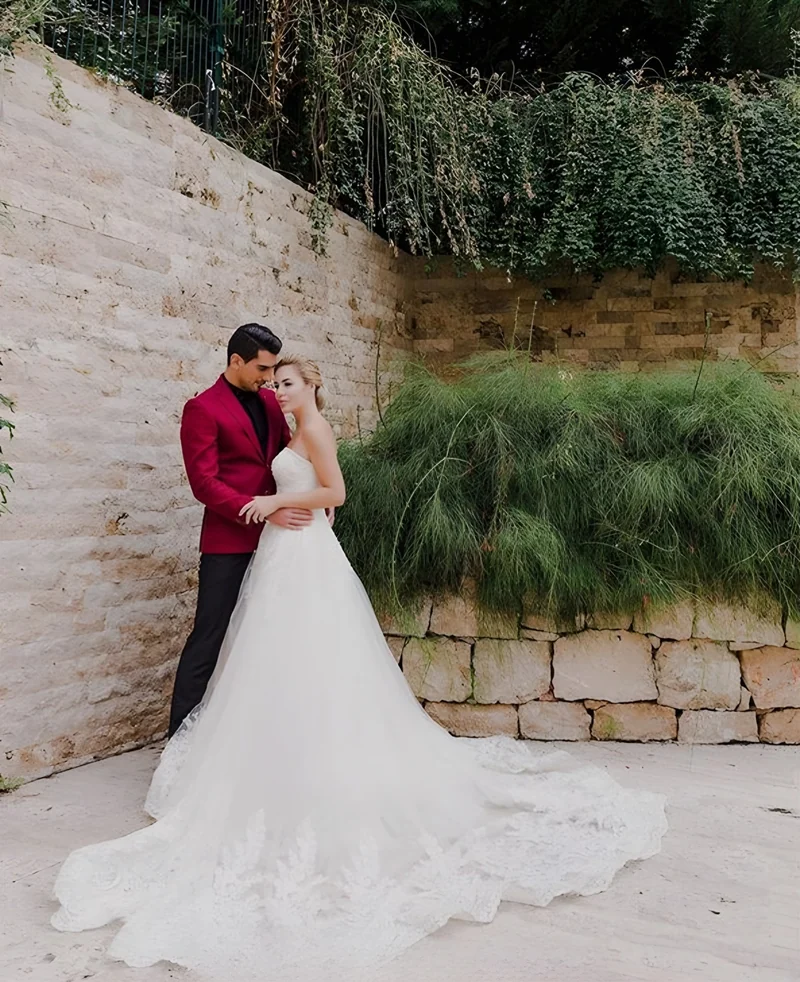
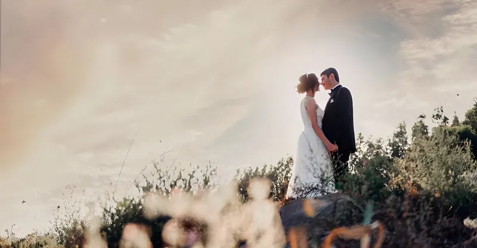
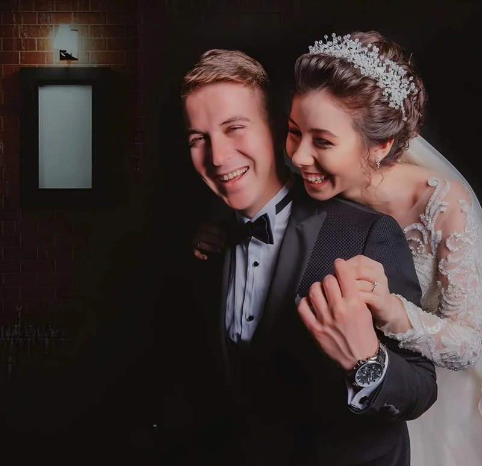

Düğün Fotoğrafı
Hazırlıktan salona, düğün gününüzün tamamı; aile ve davetli kareleriyle birlikte.
Kalenin taş duvarlarından Göksu'nun gün batımına; düğününüzün en doğal, en sıcak anlarını yıllarca saklayacağınız karelere dönüştürüyoruz.

Efce Fotoğrafçılık, Silifke'de düğün, nişan, kına ve dış çekim alanında çalışan bir fotoğraf stüdyosu. Çekimlerimizi kalıp pozlarla değil, sizin doğallığınızla kuruyoruz.
Hazırlık sürecinden düğünün son dansına kadar yanınızdayız. Konsepti birlikte planlıyor, mekânı ışığa göre seçiyor, sonucu el yapımı albümlerle elinize teslim ediyoruz. İlk görüşmeyi stüdyomuzda bir kahve eşliğinde yapalım.
— Efce Photography
Söz kesiminden düğün belgeseline kadar her aşamada aynı ekip, aynı özen.
Hazırlıktan salona, düğün gününüzün tamamı; aile ve davetli kareleriyle birlikte.
Silifke Kalesi, Göksu, Taşucu sahili… Gün batımında, size en çok yakışan mekânda.
Ailenizin en duygusal gecelerini, kınanın kırmızısını ve gelinin gözyaşını kaçırmadan.
Fikirden ışığa, stilden mekâna kurgulanmış konsept çekimler ve ürün/marka katalogları.
Gününüzün hikâyesini anlatan sinematik klip ve baştan sona düğün belgeseli.
Düğünden sonra gelinliğinizle özgürce: deniz, kayalık, rüzgâr ve hiç çekinmeden.
Masalardaki karekodu okutan misafirleriniz, çektikleri fotoğrafları uygulama indirmeden tek albümde size gönderir.
Nasıl çalışır →








Daha fazlası için Instagram sayfamızı ziyaret edin.
Silifke ve çevresi, Akdeniz'in en fotojenik köşelerinden. Mekânı ve saati sizinle birlikte, ışığa göre seçiyoruz.
Tepeden Göksu ovasına bakan taş surlar; tarihi ve görkemli kareler.
İkindi & gün batımıMekânı incele → Şehir merkeziGöksu Nehri üzerindeki tarihi köprü ve nehir kıyısı; sakin, romantik tonlar.
Sabah erkenMekânı incele → Göksu DeltasıUçsuz sazlıklar, lagünler ve kuş sesleri; doğal ve sinematik geniş açılar.
Altın saatMekânı incele → Taşucuİskele, tekneler ve deniz; gün batımında altın rengi bir arka plan.
Gün batımıMekânı incele → KızkalesiDenizin ortasındaki efsanevi kale; masalsı bir Akdeniz kartpostalı.
Gün doğumuMekânı incele → NarlıkuyuTurkuaz su, kayalıklar ve balıkçı kasabası dokusu.
Öğleden sonraMekânı incele → Narlıkuyu yakınıDev obruklar ve yeşil doğa; sıra dışı, dramatik kareler.
SabahMekânı incele → UzuncaburçYükselen antik sütunlar ve tapınak kalıntıları; zamansız, epik bir atmosfer.
Altın saatMekânı incele →Stüdyomuzda ya da telefonda tarihinizi, hayalinizi ve bütçenizi konuşuyoruz.
Mekân, saat, konsept ve kıyafet uyumunu birlikte kurguluyoruz.
Rahat, eğlenceli ve doğal bir çekim; siz anın tadını çıkarın, gerisi bizde.
Özenle düzenlenmiş kareler, orijinal dosyalar ve el yapımı albümünüz.
Fotoğraflarınız ekranda kalmasın. Kuşaktan kuşağa aktarılacak, özenle hazırlanmış albümler.
Biz kameramızla sizi çekerken, misafirleriniz de yüzlerce samimi an yakalıyor. Bu kareler telefonlarda kaybolmasın: masalara koyduğumuz şık karekod kartlarını okutan herkes, fotoğraflarını saniyeler içinde size özel albüme yükler.
Adlarınız ve tarihinizle size özel tasarlanmış karekod kartlarını masalara yerleştiriyoruz.
Misafir telefon kamerasıyla okutur, fotoğraflarını seçer. Uygulama, üyelik, şifre yok.
Tüm fotoğraflar düğün gecesinden itibaren size özel albümde toplanır, düğün sonrası size teslim edilir.
Çiftlerimizin mutluluğu, en güzel referansımız.Düğün.com değerlendirmesi · 5,0 / 5
Bizimle çalıştınız mı? Google'da yorum yazın →
Burada cevabını bulamadığınız her şeyi WhatsApp'tan sorabilirsiniz.
Fiyat; çekim türüne, süreye, mekâna ve albüm seçimine göre değişiyor. Tarihinizi ve isteğinizi yazın, size özel paketimizi hemen gönderelim.
Evet. Silifke dışında, Mersin ve çevre illerde de çekim yapıyoruz.
Düzenlenmiş fotoğraflar ortalama 4 hafta içinde teslim edilir. Orijinal dosyalarınızı da size veriyoruz.
Evet, Silifke'deki stüdyomuzda iç mekân çekimleri yapıyoruz; dış çekimle birlikte planlanabilir.
Yaz ayları ve hafta sonları çok yoğun geçiyor. Tarihinizi kesinleştirdiğiniz anda yazmanızı öneririz.
Formu doldurun, mesajınız WhatsApp'a hazır gelsin. Ya da stüdyomuza uğrayın, kahvemizi birlikte içelim.
StüdyoGöksu Mah. Veli Gürten Bozbey Cad.
Kızılay İşhanı No:3/D
33960 Silifke / Mersin
Yol tarifi al →